Toho
Toho · Fukuoka
Toho
Highlighted on the Fukuoka map.
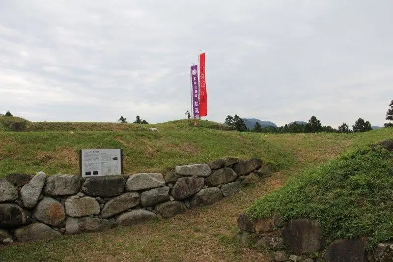
Dining
kutsurogi+
kutsurogi
京や
京や
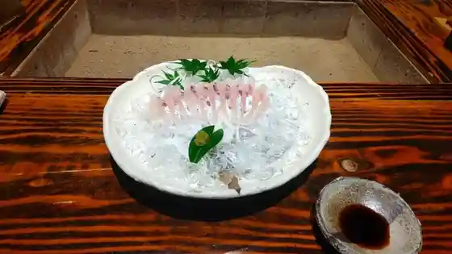
やまめ山荘
やまめ山荘
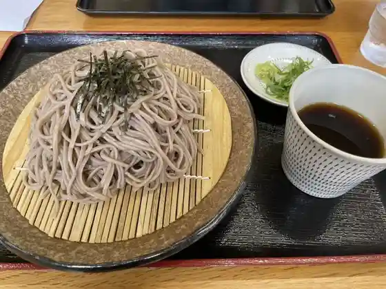
山乃茶家
山乃茶家
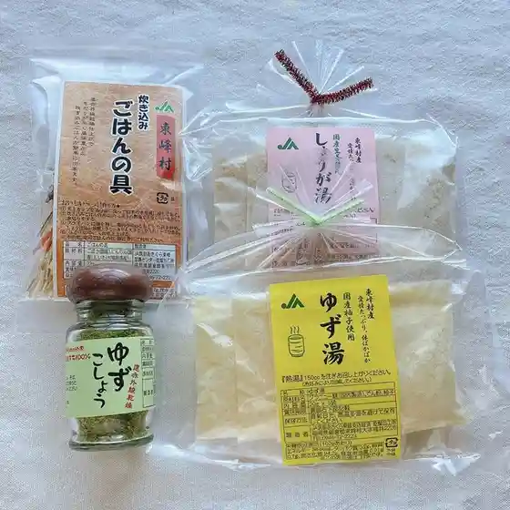
道の駅 小石原
道の駅 小石原
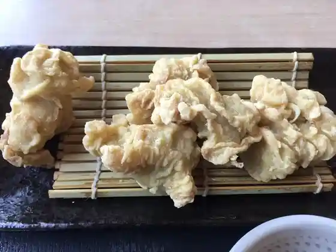
レストラン こだち
レストラン こだち
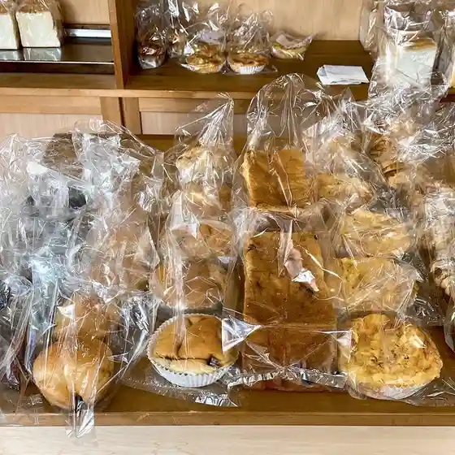
ふくちゃん家
ふくちゃん家
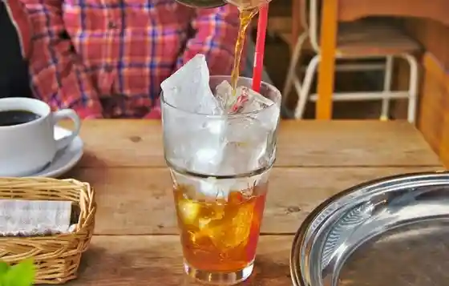
ジューンベリー
ジューンベリー
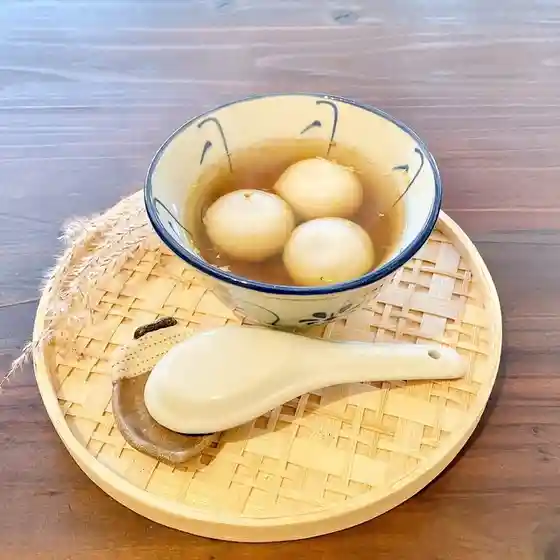
an.hour 一時・一隅
an.hour
中華料理 11番
中華料理 11番
伊東屋旅館
伊東屋旅館
里山カフェ 棚田屋
里山カフェ 棚田屋
片岡酒造
片岡酒造
食事のさと 小石原
食事のさと 小石原
佐々木製菓
佐々木製菓
匙加減 其の弐
匙加減 其の弐
つづみの里 農産物直売所
つづみの里 農産物直売所
あんたげ
あんたげ
多加蔵
多加蔵
シェフガーデン田口
シェフガーデン田口
ビーアンドビーカフェトゥーハーツ
ビーアンドビーカフェトゥーハーツ
ドライブイン 山福
ドライブイン 山福
地どり家
地どり家
レストラン水樹亭
レストラン水樹亭
千成瓢箪
千成瓢箪
カネダイ
カネダイ
CAFE POPO
CAFE POPO
多加蔵
多加蔵
和多屋寿司
和多屋寿司
Yama No Chaya
Yama No Chaya
Kaiseki Teuchi Soba Kyoya
Kaiseki Teuchi Soba Kyoya
Yamameso
Yamameso
Chef Gardentaguchi
Chef Gardentaguchi
Takakura
Takakura
Shokuji No Sato Koishiwara
Shokuji No Sato Koishiwara
Two Hearts
Two Hearts
Restaurant Kodachi
Restaurant Kodachi
Sosuke
Sosuke
Juneberry
Juneberry
New Sakamotoya
New Sakamotoya
Sum Taya Sushi
Sum Taya Sushi
Koishiwara Mori No Ie
Koishiwara Mori No Ie
Kifue
Kifue
Drive In Yamafuku
Drive In Yamafuku
Takashima Tadashi
Takashima Tadashi
Kikumi
Kikumi
Stay
ほうしゅ楽舎
ほうしゅ楽舎
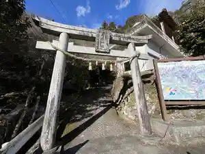
岩屋キャンプ場 古民家ヴィラ「あんたげ」
岩屋キャンプ場 古民家ヴィラ「あんたげ」
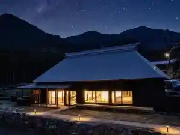
Sights
Iwaya Shrine
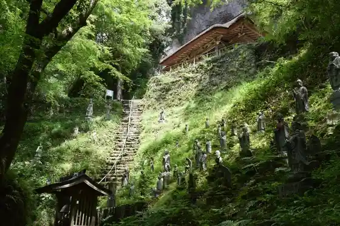
Roadside Station Koishiwara
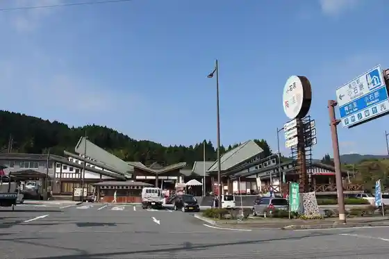
Koishiwara Yaki Dento Sangyo Hall
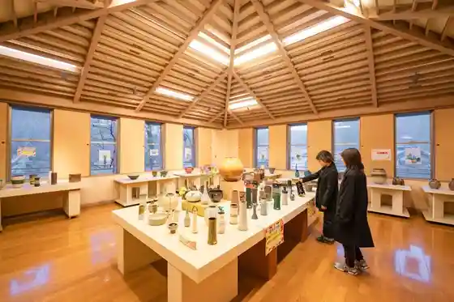
Hikari no Michi
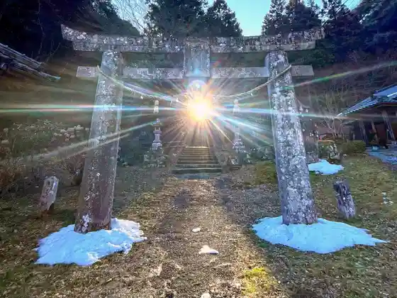
Koishiwara Yaki Yamamaru Kama
Pon Ta no Mori Campground
kutsurogi+
Tanada Shinsui Park
Fureai Plaza Tsuzumi Village
Koishiwara Yaki
Iwaya Campground
an.hour Ichiji Ichigu
Takatori Yaki
Akuakureta Koishiwara
Toho Saigai Densho Kan
Toho Momiji Rodo
Take no Tanada
Megane Hashi (Toho)
Iwaya Yusui
Matsuo Castle Ruins
Hoshuyama Eki
Yamame Sanso
Mori Ki Kamamoto
Koishiwara no Gyoja Sugi
Marudai Kamamoto
Kanedai Misoshoyu Jozomoto
Iwaya no Kigan
Okina Mei Kamamoto
Tatsumi Kama
Yama Village Bunka Koryu no Sato Ibuki Kan
Ono Kamamoto
Izumi Kan
Takagi Shrine (Asakura Gun Toho)
Kataoka Shuzo
Resutoran Kodachi
Iwaya Park no Taiko Mago Ki
Iwaya Park
Satoyama Kafe Tanada Ya
Teshigoto Workshop Toho Mokujin toho-kobito
Shakunage Forest
Tsurumi Kamamoto